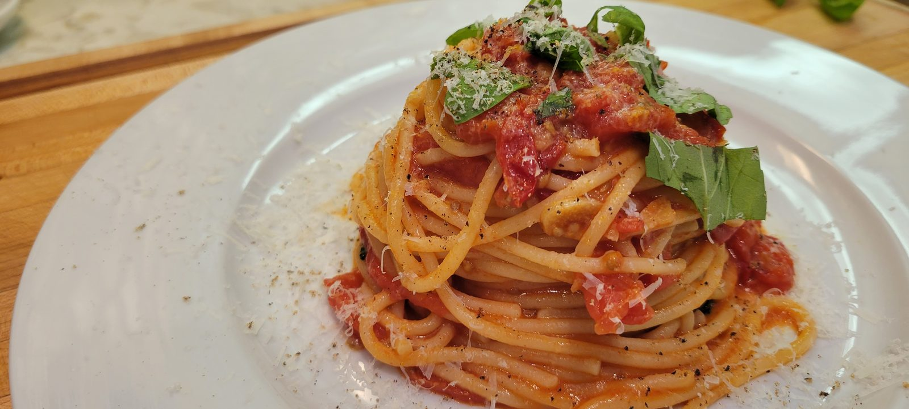

Pasta Pomodoro

I almost talked myself into picking something up on the way home from work because I couldn't think of anything to make for dinner. Then I remembered I had a few containers of fresh tomatoes, basil from my plants, and pasta. Less than 20 minutes later, dinner was on the table. For me, the fresh tomatoes are what make this dish. When they're in season, they bring a freshness and flavor that completely transforms such a simple pasta.
Prep Time
10 minutes
Cook Time
20 minutes
Total Time
30 minutes
Servings
2
Watch the Video
Ingredients
- 8 oz (225 g) spaghetti or linguine
- 1½ lb (680 g) ripe fresh tomatoes, chopped
- 3 tablespoons extra virgin olive oil
- 3 cloves garlic, thinly sliced
- A handful of fresh basil leaves
- ½ cup (45 g) finely grated Parmigiano Reggiano, plus more for serving
- Kosher salt
- Freshly ground black pepper
- Reserved pasta water, as needed
Instructions
- Bring a large pot of well-salted water to a boil and cook the pasta until just shy of al dente. Reserve 1 cup of pasta water.
- Heat the olive oil in a large skillet over medium heat. Add the garlic and cook until fragrant.
- Add the chopped tomatoes and a pinch of salt. Cook, stirring occasionally, until they break down into a fresh sauce, 10–12 minutes.
- Add the pasta and a splash of pasta water. Toss until the sauce coats the noodles.
- Remove from the heat. Tear in the basil and toss with the Parmigiano Reggiano.
- Season with salt and pepper and serve immediately.
Chef’s Notes
This is the in-season tomato pasta, not the 15-minute cherry-tomato weeknight version and not the strained tomato-zucchini sauce. Use the best tomatoes you have—garden or farmers market if you can. If they're watery, let them cook a few extra minutes before the pasta goes in.
Equipment Used
- Large pot
- Large skillet
- Tongs